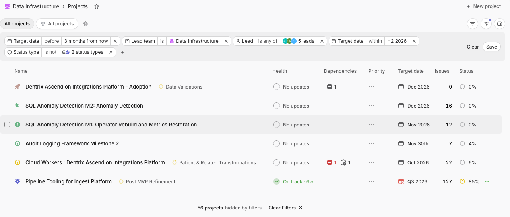

WDC-US 2026 · Live demo
Forecasting Q4 from Linear
The demo from the talk, step by step: pull a team's real history out of Linear, then ask the three questions of the iron triangle (how many items, how many days, what are the odds) about our actual Q4 commitments. Every command is numbered and has a Copy button.
1Export data from Linear
# in .bashrc, .zshrc, etc.
export LINEAR_API_KEY=lin_api_...forecast linear sync -db data.db -teams dataINFO full sync (new team): team=DATA
INFO upserted: team=DATA count=2131 trashed-skipped=24You now have a sqlite3 database, which means that you can do lots of interesting analysis, including with an agent who can write Python to calculate things and draw visuals for you.
Not on Linear? Every forecast command below also
accepts a CSV or JSON export via -input. All it really needs
is when each issue was created, started, and completed.
2How many items for Q4?
First, let's open up Linear and see what projects we've agreed to for Q4:

This command shows how many non-terminal items (backlog, unstarted, started) are left in each project that has been updated recently:
forecast count -input data.dbPROJECT ISSUES
Cloud Workers : Dentrix Ascend on Integrations Platform 22
Pipeline Tooling for Ingest Platform 19
Audit Logging Framework Milestone 2 7
SQL Anomaly Detection M2: Anomaly Detection 16
SQL Anomaly Detection M1: Operator Rebuild and Metrics Restoration 12
Why 19, not 127? Linear's Issues column counts every
issue in the project, including finished ones. forecast count
only counts what's left. Pipeline Tooling is 85% done, so only
19 of its 127 issues remain.
Okay, so that's 76 issues listed here. That's our current understanding of scope for these Q4 projects.
Now, what's our forecasted capacity for Q4? How many items can our team expect to complete in Q4 based on our recent throughput history?
Let's see, there's 92 days in Q4.
forecast sim items \
-input data.db \
-whole-team \
-days 92 \
-sample-start "-3 months" \
-simulations 10000000whole-team throughput, 2026-10-08 to 2027-01-07 (92 days) -> how many items?
Confidence Items
50% at least 96
75% at least 86
85% at least 81
95% at least 72
Reading the flags: -whole-team adds up the whole
team's daily completions instead of modeling individual engineers.
-sample-start "-3 months" builds the pool from the last three
months of throughput. -simulations 10000000 replays the
future ten million times. Want to see how one of those replays works?
Try the How many items? interactive demo.
But today is already October 7. So we don't have 92 days (look at the
output: that window runs into January). Instead let's use
-target-start-date tomorrow and
-target-end-date 2026-12-31.
forecast sim items \
-input data.db \
-sample-start "-3 months" \
-simulations 10000000 \
-whole-team \
-target-start-date tomorrow \
-target-end-date "2026-12-31"whole-team throughput, 2026-10-08 to 2026-12-31 (85 days) -> how many items?
Confidence Items
50% at least 88
75% at least 79
85% at least 74
95% at least 66Okay, 85% confident to commit to at least 74 items. So far so good!
But what about WDC and company holidays and deploy freezes?
{
"global": [
{"from": "2026-10-07", "to": "2026-10-08", "reason": "WDC26 Deploy Freeze"},
{"from": "2026-11-07", "to": "2026-11-09", "reason": "Diwali Deploy Freeze"},
{"from": "2026-11-25", "to": "2026-11-29", "reason": "Thanksgiving Deploy Freeze"},
{"from": "2026-12-18", "to": "2027-01-04", "reason": "Winter Holidays Deploy Freeze"},
{"date": "2026-11-26", "reason": "Thanksgiving (US Holiday)"},
{"date": "2026-11-27", "reason": "Day after Thanksgiving (US Holiday)"},
{"date": "2026-12-24", "reason": "Christmas Eve (US Holiday)"},
{"date": "2026-12-25", "reason": "Christmas Day (US Holiday)"},
{"date": "2026-12-31", "reason": "New Year's Eve (US Holiday)"},
{"date": "2027-01-01", "reason": "New Year's Day (US Holiday)"}
]
}How exclusions work: an excluded day in the forecast window still counts on the calendar, but it contributes zero completions. If an excluded day also falls in the three-month sample window, it gets dropped from the pool, so a past holiday doesn't drag your throughput down twice.
forecast sim items \
-input data.db \
-sample-start "-3 months" \
-simulations 10000000 \
-whole-team \
-target-start-date tomorrow \
-target-end-date "2026-12-31" \
-exclusions exclusions.jsonwhole-team throughput, 2026-10-08 to 2026-12-31 (85 days) -> how many items?
Confidence Items
50% at least 65
75% at least 57
85% at least 53
95% at least 46Oof! Okay, that went down from 74 to 53. 85% confident we can commit to at least 53 items.
3How many days?
Okay, so 53 is our team's forecasted capacity (in Linear issues) for Q4.
When do we think we'd actually be able to get 76 issues done by? What's a plausible end date for this work?
forecast sim days \
-input data.db \
-sample-start "-3 months" \
-simulations 10000000 \
-whole-team \
-target-start-date tomorrow \
-items 76 \
-exclusions exclusions.jsonwhole-team throughput, 76 items -> how many days?
Confidence Days Date
50% 100 2027-01-16 Sat
75% 108 2027-01-24 Sun
85% 113 2027-01-29 Fri
95% 122 2027-02-07 SunSo that's looking more like towards the end of January.
And actually, there was one project shown in Linear that we committed to, and it didn't have any tickets in it (Dentrix Ascend on Integrations Platform - Adoption, with 0 issues). Let's just put a number in there for now. 10?
Unknown scope is still scope. An empty project doesn't mean zero work. It means we haven't broken it down yet. A rough guess beats leaving it out, and you can re-run the forecast once the tickets exist.
Let's re-run with 86 items:
forecast sim days \
-input data.db \
-sample-start "-3 months" \
-simulations 10000000 \
-whole-team \
-target-start-date tomorrow \
-items 86 \
-exclusions exclusions.jsonwhole-team throughput, 86 items -> how many days?
Confidence Days Date
50% 109 2027-01-25 Mon
75% 118 2027-02-03 Wed
85% 123 2027-02-08 Mon
95% 132 2027-02-17 WedOkay, that's looking like halfway into February.
Try the How many days? interactive demo to watch where these finish dates come from.
4So what's the probability of getting all 86 Linear issues done by the end of Q4?
Let's run a probability simulation for 86:
forecast sim probability \
-input data.db \
-sample-start "-3 months" \
-simulations 10000000 \
-whole-team \
-target-start-date tomorrow \
-target-end-date "2026-12-31" \
-items 86 \
-exclusions exclusions.jsonwhole-team throughput, 2026-10-08 to 2026-12-31 (85 days), 86 items -> probability of completion? 5.5% (i.e. you can commit to 86 items here at ~5% confidence)Try the What are the odds? interactive demo to see how this number is counted.
5Recap
| Question | Answer |
|---|---|
| How many items can we finish in Q4 (holidays and freezes included)? | at least 53 (85%) |
| When could we finish the 76 issues we know about? | 2027-01-29 (85%) |
| When could we finish 86 issues (with the empty project)? | 2027-02-08 (85%) |
| What's the chance of all 86 by 2026-12-31? | 5.5% |
None of this needed an estimate from anyone. It's all there in the team's historical throughput. Now the conversation can be about the levers: cut scope, move the date, or decide how much risk we're willing to accept.